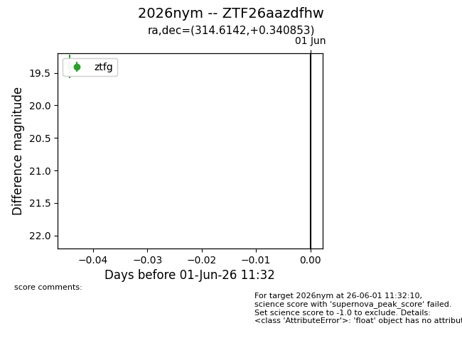
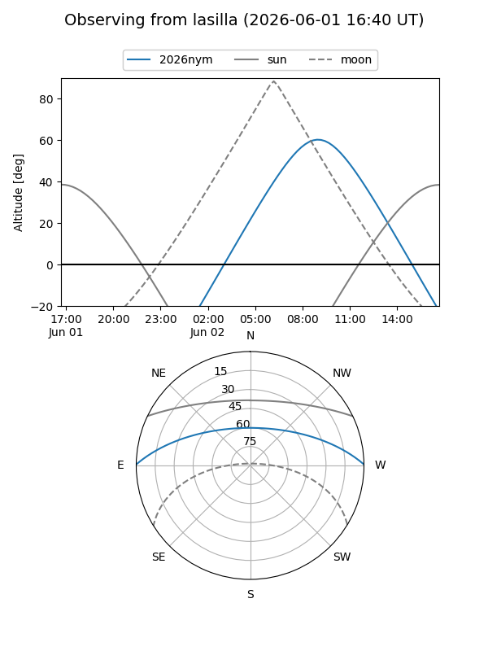
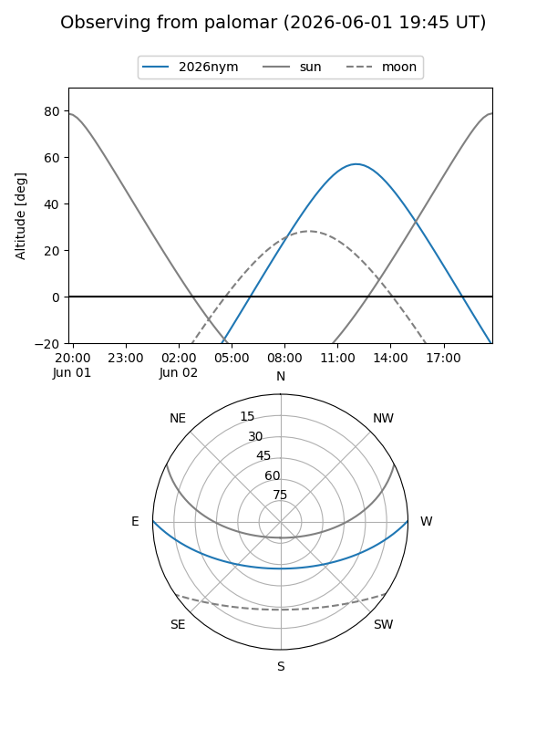

2026nym
Target 2026nym at 2026-06-01 11:33
Aliases and brokers:
lsst-FINK: link
lsst-Lasair: link
lsst-ALeRCE: link
ztf-FINK: link
ztf-Lasair: link
ztf-ALeRCE: link
TNS: link
YSE: link
alt names
ZTF26aazdfhw (ztf,fink_ztf)
2026nym (tns,yse)
Coordinates:
equatorial (ra, dec) = 314.6142,+0.34085
equatorial (HMS+DMS) = 20:58:27.42,+00:20:27.07
galactic (l, b) = (49.0222,-27.75333)
Flags:
TNS confirmed: nan
Photometry:
last ztfg=19.40
1 ztfg detections
Lightcurve

Visibility


Additional plots